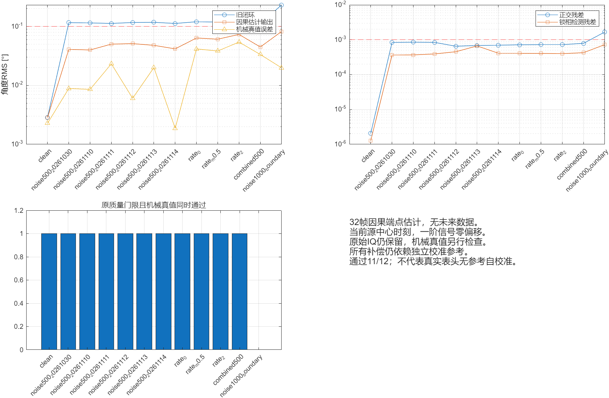

同门限；原始、估计、机械真值区分。校准参考条件不变。

| 工况 | 之前RMS | 估计RMS | 机械RMS | 通过 |
|---|---|---|---|---|
| clean | 0.00285518 | 0.00284865 | 0.00226935 | 1 |
| noise500_20261030 | 0.115967 | 0.040837 | 0.00887074 | 1 |
| noise500_20261110 | 0.114655 | 0.0398981 | 0.00854972 | 1 |
| noise500_20261111 | 0.112578 | 0.0501025 | 0.0232361 | 1 |
| noise500_20261112 | 0.116555 | 0.0510741 | 0.00603707 | 1 |
| noise500_20261113 | 0.117509 | 0.047803 | 0.0200618 | 1 |
| noise500_20261114 | 0.112394 | 0.0416394 | 0.00187194 | 1 |
| rate_0 | 0.120141 | 0.0637265 | 0.041554 | 1 |
| rate_m0.5 | 0.118698 | 0.0607581 | 0.0383557 | 1 |
| rate_2 | 0.122827 | 0.0732314 | 0.054282 | 1 |
| combined500 | 0.110274 | 0.0447963 | 0.0334055 | 1 |
| noise1000_boundary | 0.232129 | 0.0821513 | 0.0198525 | 0 |